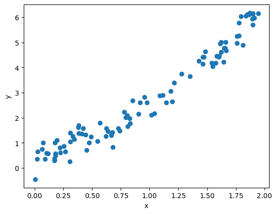
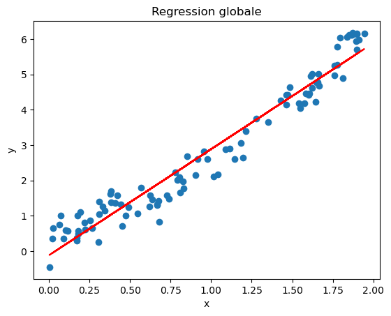
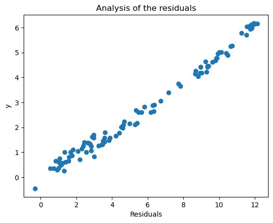
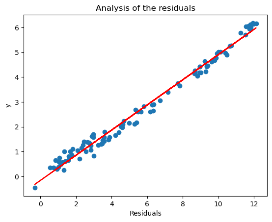
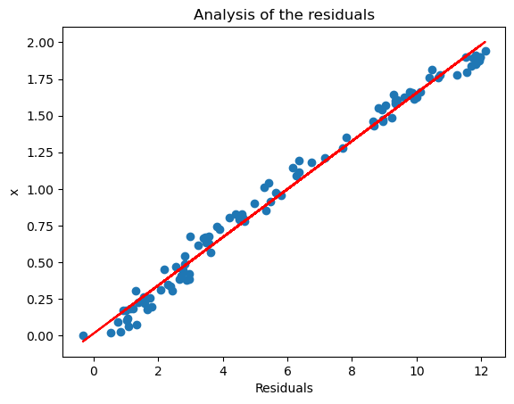

Linear regression (simple)
Exercice
Charger le fichier “jouet1.txt” dans un dataframe nommé jouet1. Au vu du graphique de y contre x, une régression linéaire vous semble-t-elle indiquée ?
Faire la régression de y sur x et mettre le résultat dans un objet nommé reg. Afficher le résumé des résultats. Le résultat confirme-t-il la réponse à la question 1 ?
Afficher le graphique des résidus εˆ contre les valeurs ajustées yˆ . ii Que penser de ce graphique au vu de ce que l’on sait sur ces deux quantités ?
Afficher le graphique des résidus contre x. Identifier le problème.
[57]:
# load the data
import pandas as pd
df = pd.read_table("/Users/davidtbo/Documents/Data_Science/99_Data/jouet1.txt", sep=" ")
[58]:
df.head()
[58]:
| y | x | |
|---|---|---|
| 0 | 2.161254 | 1.040725 |
| 1 | 0.604845 | 0.224656 |
| 2 | 1.784275 | 0.829065 |
| 3 | 0.756488 | 0.065402 |
| 4 | 4.421222 | 1.470699 |
[59]:
df.columns
[59]:
Index(['y', 'x'], dtype='object')
[60]:
df.shape
[60]:
(100, 2)
[61]:
df.describe(include='all')
[61]:
| y | x | |
|---|---|---|
| count | 100.000000 | 100.000000 |
| mean | 2.809423 | 0.975125 |
| std | 1.942694 | 0.629643 |
| min | -0.455165 | 0.002972 |
| 25% | 1.217609 | 0.384678 |
| 50% | 2.158483 | 0.876917 |
| 75% | 4.500821 | 1.607201 |
| max | 6.179396 | 1.943342 |
[62]:
import matplotlib.pyplot as plt
[63]:
# Create a scatter plot (nuage de points)
plt.plot(df["x"], df["y"], "o")
# Define the labels
plt.xlabel("x")
plt.ylabel("y")
# Display the graph
plt.show()

[64]:
import numpy as np
from statsmodels.formula.api import ols
# Assuming your data is stored in a pandas DataFrame named 'jouet'
model1 = ols('y ~ x', data=df).fit()
# Print the model summary
print(model1.summary())
OLS Regression Results
==============================================================================
Dep. Variable: y R-squared: 0.949
Model: OLS Adj. R-squared: 0.948
Method: Least Squares F-statistic: 1810.
Date: Thu, 22 Feb 2024 Prob (F-statistic): 5.53e-65
Time: 16:10:12 Log-Likelihood: -59.367
No. Observations: 100 AIC: 122.7
Df Residuals: 98 BIC: 127.9
Df Model: 1
Covariance Type: nonrobust
==============================================================================
coef std err t P>|t| [0.025 0.975]
------------------------------------------------------------------------------
Intercept -0.1209 0.082 -1.477 0.143 -0.283 0.042
x 3.0051 0.071 42.540 0.000 2.865 3.145
==============================================================================
Omnibus: 5.265 Durbin-Watson: 1.960
Prob(Omnibus): 0.072 Jarque-Bera (JB): 2.566
Skew: -0.063 Prob(JB): 0.277
Kurtosis: 2.225 Cond. No. 3.45
==============================================================================
Notes:
[1] Standard Errors assume that the covariance matrix of the errors is correctly specified.
[65]:
# Extract regression coefficients
intercept = model1.params[0]
slope = model1.params[1]
# Add regression line to the plot
plt.plot(df["x"], df["y"], "o")
plt.plot(df["x"], intercept + slope * df["x"], "-r")
# Customize the plot
plt.xlabel("x")
plt.ylabel("y")
plt.title("Regression globale")
# Show the plot
plt.show()

[67]:
# Residuals : e = y_observed - y_estimated
df['res'] = df['y'] - intercept + slope * df["x"]
[48]:
# plot residuals * y
# Add regression line to the plot
plt.plot(df["res"], df["y"], "o")
#plt.plot(df["x"], intercept + slope * df["x"], "-r")
# Customize the plot
plt.xlabel("Residuals")
plt.ylabel("y")
plt.title("Analysis of the residuals")
# Show the plot
plt.show()

[68]:
# Model 2: y ~ res
model2 = ols('y ~ res', data=df).fit()
# Print model summaries
print("Model 2 summary:")
print(model2.summary())
Model 2 summary:
OLS Regression Results
==============================================================================
Dep. Variable: y R-squared: 0.987
Model: OLS Adj. R-squared: 0.987
Method: Least Squares F-statistic: 7636.
Date: Thu, 22 Feb 2024 Prob (F-statistic): 8.85e-95
Time: 16:13:41 Log-Likelihood: 10.620
No. Observations: 100 AIC: -17.24
Df Residuals: 98 BIC: -12.03
Df Model: 1
Covariance Type: nonrobust
==============================================================================
coef std err t P>|t| [0.025 0.975]
------------------------------------------------------------------------------
Intercept -0.1601 0.040 -3.955 0.000 -0.240 -0.080
res 0.5067 0.006 87.383 0.000 0.495 0.518
==============================================================================
Omnibus: 5.295 Durbin-Watson: 1.923
Prob(Omnibus): 0.071 Jarque-Bera (JB): 2.539
Skew: -0.032 Prob(JB): 0.281
Kurtosis: 2.222 Cond. No. 13.0
==============================================================================
Notes:
[1] Standard Errors assume that the covariance matrix of the errors is correctly specified.
[69]:
# Extract regression coefficients
intercept = model2.params[0]
slope = model2.params[1]
# plot residuals * y
# Add regression line to the plot
plt.plot(df["res"], df["y"], "o")
plt.plot(df["res"], intercept + slope * df["res"], "-r")
# Customize the plot
plt.xlabel("Residuals")
plt.ylabel("y")
plt.title("Analysis of the residuals")
# Show the plot
plt.show()

[70]:
# Model 2: x ~ res
model3 = ols('x ~ res', data=df).fit()
# Print model summaries
print("Model 3 summary:")
print(model3.summary())
Model 3 summary:
OLS Regression Results
==============================================================================
Dep. Variable: x R-squared: 0.987
Model: OLS Adj. R-squared: 0.987
Method: Least Squares F-statistic: 7238.
Date: Thu, 22 Feb 2024 Prob (F-statistic): 1.17e-93
Time: 16:13:53 Log-Likelihood: 120.65
No. Observations: 100 AIC: -237.3
Df Residuals: 98 BIC: -232.1
Df Model: 1
Covariance Type: nonrobust
==============================================================================
coef std err t P>|t| [0.025 0.975]
------------------------------------------------------------------------------
Intercept 0.0130 0.013 0.967 0.336 -0.014 0.040
res 0.1642 0.002 85.079 0.000 0.160 0.168
==============================================================================
Omnibus: 5.295 Durbin-Watson: 1.923
Prob(Omnibus): 0.071 Jarque-Bera (JB): 2.539
Skew: 0.032 Prob(JB): 0.281
Kurtosis: 2.222 Cond. No. 13.0
==============================================================================
Notes:
[1] Standard Errors assume that the covariance matrix of the errors is correctly specified.
[71]:
# Extract regression coefficients
intercept = model3.params[0]
slope = model3.params[1]
# plot residuals * y
# Add regression line to the plot
plt.plot(df["res"], df["x"], "o")
plt.plot(df["res"], intercept + slope * df["res"], "-r")
# Customize the plot
plt.xlabel("Residuals")
plt.ylabel("x")
plt.title("Analysis of the residuals")
# Show the plot
plt.show()

Confidence interval
Previsions
[87]:
# Create a new set of x values:
xnew = {'x': [1, 2]}
xnew = pd.DataFrame(xnew)
[88]:
xnew
[88]:
| x | |
|---|---|
| 0 | 1 |
| 1 | 2 |
[89]:
print(model1.summary())
OLS Regression Results
==============================================================================
Dep. Variable: y R-squared: 0.949
Model: OLS Adj. R-squared: 0.948
Method: Least Squares F-statistic: 1810.
Date: Thu, 22 Feb 2024 Prob (F-statistic): 5.53e-65
Time: 16:23:30 Log-Likelihood: -59.367
No. Observations: 100 AIC: 122.7
Df Residuals: 98 BIC: 127.9
Df Model: 1
Covariance Type: nonrobust
==============================================================================
coef std err t P>|t| [0.025 0.975]
------------------------------------------------------------------------------
Intercept -0.1209 0.082 -1.477 0.143 -0.283 0.042
x 3.0051 0.071 42.540 0.000 2.865 3.145
==============================================================================
Omnibus: 5.265 Durbin-Watson: 1.960
Prob(Omnibus): 0.072 Jarque-Bera (JB): 2.566
Skew: -0.063 Prob(JB): 0.277
Kurtosis: 2.225 Cond. No. 3.45
==============================================================================
Notes:
[1] Standard Errors assume that the covariance matrix of the errors is correctly specified.
[90]:
# Prédire les nouvelles valeurs
prediction = model1.predict(xnew)
# Afficher les prédictions
print(prediction)
0 2.884176
1 5.889269
dtype: float64
[91]:
import statsmodels.api as sm
anova_result = sm.stats.anova_lm(model1, type=2)
print(anova_result)
df sum_sq mean_sq F PR(>F)
x 1.0 354.437450 354.437450 1809.623067 5.525588e-65
Residual 98.0 19.194533 0.195863 NaN NaN
[92]:
print(model1.summary())
OLS Regression Results
==============================================================================
Dep. Variable: y R-squared: 0.949
Model: OLS Adj. R-squared: 0.948
Method: Least Squares F-statistic: 1810.
Date: Thu, 22 Feb 2024 Prob (F-statistic): 5.53e-65
Time: 16:28:08 Log-Likelihood: -59.367
No. Observations: 100 AIC: 122.7
Df Residuals: 98 BIC: 127.9
Df Model: 1
Covariance Type: nonrobust
==============================================================================
coef std err t P>|t| [0.025 0.975]
------------------------------------------------------------------------------
Intercept -0.1209 0.082 -1.477 0.143 -0.283 0.042
x 3.0051 0.071 42.540 0.000 2.865 3.145
==============================================================================
Omnibus: 5.265 Durbin-Watson: 1.960
Prob(Omnibus): 0.072 Jarque-Bera (JB): 2.566
Skew: -0.063 Prob(JB): 0.277
Kurtosis: 2.225 Cond. No. 3.45
==============================================================================
Notes:
[1] Standard Errors assume that the covariance matrix of the errors is correctly specified.
[93]:
# Generate predictions with confidence intervals
ICpred = pd.DataFrame(model1.get_prediction(xnew).summary_frame(alpha=0.05))
[94]:
ICpred.head()
[94]:
| mean | mean_se | mean_ci_lower | mean_ci_upper | obs_ci_lower | obs_ci_upper | |
|---|---|---|---|---|---|---|
| 0 | 2.884176 | 0.044291 | 2.796281 | 2.972071 | 2.001536 | 3.766816 |
| 1 | 5.889269 | 0.084855 | 5.720878 | 6.057660 | 4.995019 | 6.783520 |
[95]:
# Combine predictions and new data
res_pred = pd.concat([ICpred, xnew], axis=1)
print(res_pred.head().to_string())
mean mean_se mean_ci_lower mean_ci_upper obs_ci_lower obs_ci_upper x
0 2.884176 0.044291 2.796281 2.972071 2.001536 3.766816 1
1 5.889269 0.084855 5.720878 6.057660 4.995019 6.783520 2